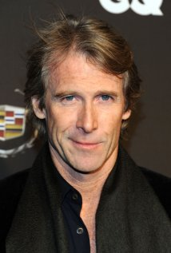
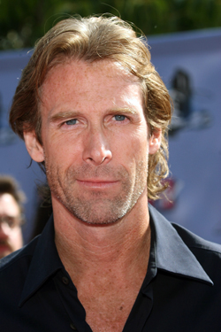
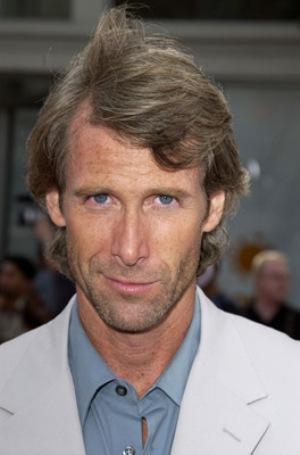
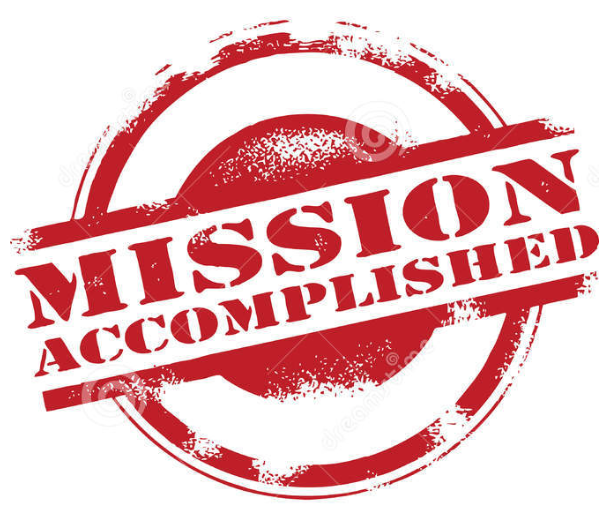

<iframe data-autoplay width="840" height="500" src="http://www.youtube.com/embed/9jK-NcRmVcw"></iframe> --- ### Administrative Notes * **Recitations are cancelled Friday!** * The final will be 85 questions plus a long answer question * Everybody's taking the exam at the registered time. * Missed exams will require a note from CU or a medical professional to make up * All previous grades freeze at midnight * Come talk to me right after lecture if you're coming to my office hours --- ### For the "Give two grammatical structures not found in English" question * "Grammatical structures" are things like "Word order", "Prepositions", "Tense", etc * Basically anything we've covered this semester * Pick something that English doesn't use at all (or uses poorly) * Word order, Prepositions and Tense are bad examples --- ### Any other final (or Final) questions? * Bring a #2 pencil and your student ID number to the exam --- <section data-background="lotwimg/earth.jpeg"> <section style="background-color:rgba(255, 255, 255, 0.4)"> <h1>Languages of the World</h1> <h3>Will Styler</h3> </section> --- # Gratitude --- ### Thanks to... * Asya Pereltsvaig for the textbook * All of our guest lecturers for their nerding * Kevin and Niloo (alphabetically) for their help and support * You all, for being here! --- # Flashback! --- ### This class will teach you about Language, by talking about languages. * Goal 1: Learn how linguists talk about Language * Goal 2: Learn about the incredible diversity of language in the world * Goal 3: Learn about the life cycle of languages * Goal 4: Talk about languages! * Goal 5: Turn you all into Linguists. --- # How'd we do? --- ## Goal 1: "Learn how linguists talk about Language" --- > Ojibwe is an Algonquian dialect continuum of the Great Lakes region. It's polysynthetic, VSO/VOS, with heavy use of animacy, evidentiality, and modality. Phonologically, a seven vowel system is used, with both vowel length and nasality contrastive. * ### OMG! We can understand that gibberish! --- ### Success! --- <img class="big" src="humorimg/celebration_fey.gif"> --- ## Goal 2: "Learn about the incredible diversity of language in the world" --- ### People will say stupid things to you. * "Translators are overpaid. All they do is remember different words in other languages." * "German's easy, it has most of the same sounds as English." * "Oh, come on. Indian can't be endangered, there are 300 reservations worth of speakers!" * "English is the hardest/easiest/original language." --- ### You can smack them down! --- <img class="big" src="humorimg/who-is-awesome.jpg"> --- ## Goal 3: "Learn about the life cycle of languages" --- ### You can now explain... * What language death is * What language revitalization is * Why languages tend to die in the first place * Why that's a bad thing. --- ### That's more than 99% of the world population knows! * ... And you're a better citizen of the world for it! --- --- ## Goal 4: "Talk about languages!" --- ### You can now name more languages than 90% of Americans * ... and you can talk intelligently about them too! * This doesn't seem like much, but... --- ### **People *love* when you know something about their language!** * "You're the first person I've ever known who's heard of Amharic!" * "Every other American thinks Iranian people speak Arabic! Thank you!" * "Oh, yeah, Russian's hard. You guys are all about that Case!" * 🎶 "We're bringing Dative baaaaack, why don't you tell them Romance speakers that." 🎶 * 🎶 "I know y'all use noun claaass..." 🎶 --- ### You're there to tell them that every foreign tongue is perfect from the bottom to the top * (because it is.) * Seriously, you get a lot of mileage out of "Oh, ____, that's a beautiful language!" --- ... also... --- ### You know lots more about different cultures now, too! * You know why the Chechens and Russians don't see eye-to-eye * Same with the Basque, Uighur, Kurds, etc. * You know that there was more than one Native American group * (You'd be surprised, in Boulder...) * You know that not all Africans are Khoisan language speakers * (and that all the rest don't speak Swahili) --- ### You know weird things now! * You know that Stalin didn't speak Russian well * "I speak Hebrew!" "Awesome, I love conlangs! Do you speak Klingon too?" * You know that Simba is named "Lion" * You know that everything in Chipotle is Nahuatl * [Except the art.](http://www.languagejones.com/blog-1/2014/11/10/language-jones-and-the-temple-ofburritos) * You know that we've stolen half our state names from Indigenous languages --- You know that Michael Bay only has one facial expression <img class="big" src="img/michaelbay.jpg"> --- You know that Michael Bay only has one facial expression  --- You know that Michael Bay only has one facial expression  --- You know that Michael Bay only has one facial expression  --- <danger>What else did you learn?</danger> --- ## Goal 5: "Turn you all into Linguists." ---  * Right? --- Right? <audio data-autoplay src="humorimg/cricket.mp3"></audio> --- ### Oh, some of you don't yet know that you want to declare a LING Major! --- Taking this class was a *great* first step! --- ### You've got a *huge* advantage in LING 2000 * We covered a lot of similar material, just from a very different perspective * Seriously, take LING 2000. You'll need it for the major * ... which you've already declared --- ### ... and in every other Linguistics class * We've covered elements of Language Sound Structures (LING 3100) * ... and World Language Policies (LING 3545) * ... and Morphosyntax (LING 4420) * ... and Language and Culture (LING 4800) * ... and American Indian Languages (LING ____) --- ### Did I mention the LING Major and Minor are pretty small? * Especially if you're taking a foreign language already! * Email Deanna Fierman for more information on declaring * Fierman@colorado.edu * (You can't blame a guy for trying, right?) --- ### OK, OK, maybe you're not *all* going to declare a LING major * ... but I've still warped all of your brains! --- ### You'll be weirdly interested in people speaking another language on the street --- <img class="big" src="humorimg/upsquirrellanguage.png"> --- ### Hearing an ejective in the wild will make your day. * (Seriously, you laugh now, but when you hear one...) --- ### You're *much* better equipped to learn another language * "So, this language does something *reallllllly* exotic..." * Dude, it's just case. Cool your jets. * "Can we just drop the pretense and look at a pronoun chart?" --- ### You're also better equipped to handle the uninformed * "We need somebody to offer customer support in Hmong. Let's just buy Sandy a Rosetta Stone CD." * "Translator? I'll just write the letter in English, then use Google Translate before I send it to them!" * "Anja's from Sweden, and Sweden's right next to Finland, so she should be able to rewrite the manual in Finnish." * "Of course the savage languages are going to be endangered. They can't express civilized concepts!" --- <img class="big" src="humorimg/comeatmebro.jpg"> --- ### You're going to be more sympathetic to non-Native speakers of English * Because seriously, English, go home, you're drunk. --- ### ... and you'll be kinder to yourself when you screw up another language * Because that language is drunk too. --- ... but most importantly of all... --- You understand that even though people around the world all use it differently... * # Language is magic --- ### Go be wizards! * --- <huge>Thank you very much!</huge> ---